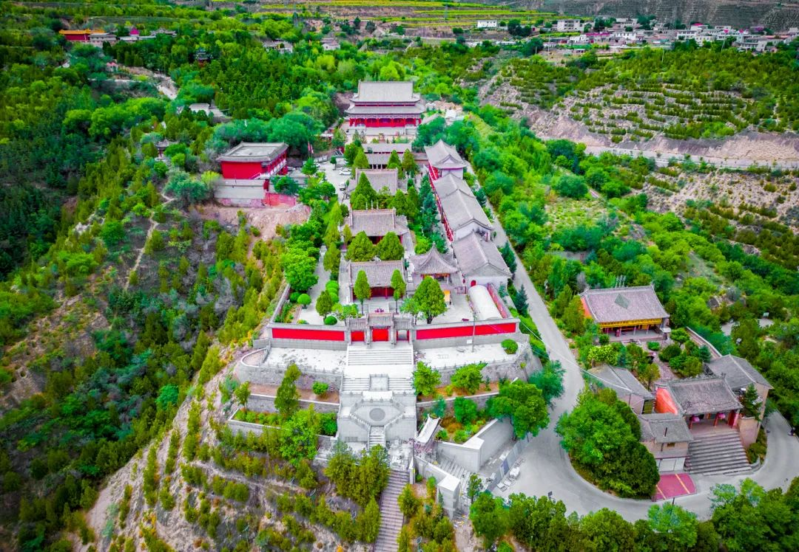

关于岷县
千年药乡 多彩岷州
地理位置
地形地貌
岷县地处青藏高原与黄土高原过渡地带，地势西南高、东北低，海拔1700-3941米
气候特征
属温带半干旱气候，年平均气温6.7℃，年降水量460-620毫米
水文条件
境内河流属黄河水系，岷江发源于此，水资源丰富
城市概况
行政区划
全县辖18个乡镇，总面积3578平方公里
人口概况
总人口约45万人，以汉族为主，少数民族占比约5%
特色产业
中药材种植加工、农副产品加工为主要产业
历史沿革
古丝绸之路重镇，具有深厚的历史文化底蕴
发展数据
72%
城镇化率
85%
农业机械化率
93%
教育普及率
产业发展
中药材产业
50
万亩
种植面积
20
亿元
年产值
种植基地
- 当归种植基地
- 党参规模化种植
- 黄芪产业园区
文化旅游产业
100
万人次
年接待游客
持续
增长
旅游收入

特色项目
- 红色旅游基地
- 民俗文化体验
- 生态观光旅游
未来展望
产业升级
现代化产业体系
- 建设智能化种植基地
- 引进先进加工设备
- 发展精深加工产业
- 打造全产业链体系
生态建设
绿色发展战略
- 推进生态种植模式
- 建设生态示范园区
- 发展循环农业
- 保护自然生态系统
民生改善
共同富裕目标
- 提升居民收入水平
- 完善公共服务体系
- 优化人居环境
- 促进就业创业
品牌建设
打造区域品牌
- 提升品牌知名度
- 扩大市场影响力
- 加强质量认证
- 拓展国际市场
人才培养
人才发展战略
- 培养专业技术人才
- 引进高端人才
- 建设培训基地
- 促进技术创新
文化传承
文化发展规划
- 保护传统文化
- 发展特色文创
- 推广地方文化
- 促进文旅融合